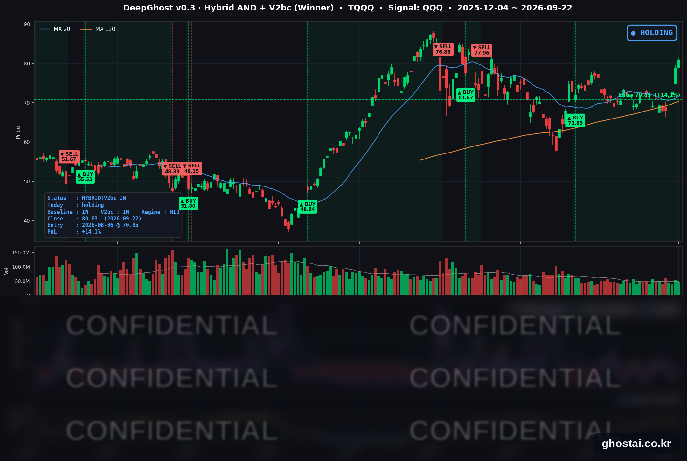

고금리/고물가/고성장 뉴노멀
· Ghost.AI 데일리 리포트
👻 매일 시그널과 히스토리를 홈페이지에서 한눈에 → www.ghostai.co.kr
회원 페이지 안내 — 회원 가입하시면 커버리지 전 종목의 원본 시그널과 분석 레포트를 매일 확인하실 수 있습니다. 회원 페이지는 블로그·유튜브보다 먼저 업데이트됩니다. 선착순 100명을 모집하고 있으며, 이메일과 필명만으로 가입하실 수 있고 서비스 사용료는 받지 않습니다. 가입 신청 후 운영자 승인을 거쳐 이용하실 수 있습니다.
나스닥이 이틀 연속 사상 최고 종가를 썼습니다. 그런데 같은 날 S&P 500은 제자리였고 다우는 내렸습니다. 오른 종목은 절반이 안 됐습니다. 유가는 안정되었으나 금리는 길을 잃었습니다. 시장은 고금리/고물가/고성장의 뉴노멀에 적응하고 있습니다.
📊 오늘의 매매 신호
| 항목 | 내용 |
|---|---|
| 오늘 할 일 | ✅ 아무것도 안 해도 됩니다 |
| 포지션 상태 | 📈 TQQQ 보유 중 (IN POSITION) |
| 매수 진입일 | 2026-08-06 (33거래일째) |
| 진입가 → 현재가 | $70.85 → $80.83 |
| 현재 포지션 수익 | +14.09% |
TQQQ 시그널 — IN POSITION
현재 상태: 매수 포지션 유지 중 | 이번 포지션 수익 +14.09%

나스닥100(QQQ)이 +0.81% 오르면서 TQQQ는 +2.43% 상승한 80.83달러로 마감했습니다. 전략의 평가손익은 전 거래일 +11.38%에서 +14.09%가 됐습니다. 8월 6일 70.85달러에 진입한 뒤 오늘이 33거래일째이고, 이틀 연속 이번 구간에서 가장 높은 자리를 갱신했습니다.
오늘의 이야기 — 지수는 최고치인데, 오른 종목은 절반이 안 됩니다
나스닥 종합지수는 27,244.28로 +0.45% 올라 이틀 연속 사상 최고 종가를 썼습니다. 그런데 같은 날 S&P 500은 -0.00%로 소수점 둘째 자리까지 제자리였고, 다우는 -0.36% 내렸습니다.
지수 안을 보면 더 분명합니다. S&P 500 구성종목 497개 중 오른 종목은 48.9%뿐이었고, 중간값 종목의 등락률은 -0.04%였습니다. 평범한 종목 하나를 골라 들고 있었다면 오늘 아주 조금 손해였다는 뜻입니다.
무엇이 이 갈림을 만들었나
메타가 9월 8일 공개한 개인용 AI 비서 Muse의 초기 반응이 좋게 나오면서, 시장이 하루 만에 계산을 다시 했습니다. Muse는 질문에 답하는 수준을 넘어 이메일·캘린더·결제·쇼핑에 연결돼 사용자를 대신해 여러 단계의 일을 처리합니다. 방치된 구독을 해지하고, 통신 요금제를 다시 협상하고, 예금을 더 높은 금리 계좌로 옮기고, 보험을 갈아타는 일이 자동으로 된다는 뜻입니다.
그러면 고객이 옮기기 번거로워서 유지되던 매출이 흔들립니다. 결과가 테마별로 뚜렷하게 나뉘었습니다.
| 테마 | 중간값 | 대표 종목 |
|---|---|---|
| AI 인프라·반도체 | +2.36% | MPWR +8.06%, MU +5.00%, STX +4.85% |
| 구독·갱신 | -5.04% | GEN -6.38%, GDDY -6.23%, ADBE -4.52% |
| 은행·증권 | -2.57% | SCHW -6.11%, WFC -3.92%, JPM -3.42% |
| 통신·케이블 | -2.22% | CHTR -4.94%, VZ -2.58% |
금융은 특히 넓게 내렸습니다. 확인한 은행·보험·카드사 18개 종목이 한 종목도 빠짐없이 하락했고 평균 -2.88%였습니다. 단기 금리가 오르고 장기 금리가 내리면서 은행이 예금과 대출 사이에서 남기는 마진이 얇아진 구도가 여기에 더해졌습니다.
방향이 정해진 시각도 특이했습니다
| 지수/ETF | 갭 (전일 종가→시가) | 정규장 (시가→종가) | 합계 |
|---|---|---|---|
| 다우존스 | +0.49% | -0.84% | -0.36% |
| S&P 500 | +0.08% | -0.08% | -0.00% |
| QQQ | -0.06% | +0.87% | +0.81% |
다우는 오르며 출발해 정규장에서 그 이상을 내줬고, QQQ는 거의 보합으로 열린 뒤 장중에만 올랐습니다. 개별 종목은 반전 폭이 더 컸습니다 — MU는 -1.02% 갭으로 열려 정규장에서 +6.09% 올랐습니다. 밤사이 뉴스가 아니라 장중에 방향이 정해진 날입니다.
오늘 미국 시장 — 시황 요약
지수 마감
| 지수 | 종가 | 등락률 |
|---|---|---|
| S&P 500 | 7,764.64 | -0.00% |
| 나스닥 종합 | 27,244.28 | +0.45% |
| 다우존스 | 51,863.69 | -0.36% |
| IWM (러셀 2000 ETF) | 287.21 | +0.57% |
| QQQ (나스닥100) | 747.46 | +0.81% |
| TQQQ | 80.83 | +2.43% |
나스닥 종합지수 27,244.28은 1979년 이후 전 이력 기준 최고 종가입니다.
국채 금리 동향
| 만기 | 수익률 | 전 거래일 대비 |
|---|---|---|
| 3개월 | 4.005% | +2.3bp |
| 5년 | 4.842% | +0.8bp |
| 10년 | 4.968% | +0.5bp |
| 30년 | 5.303% | +0.7bp |
3개월물 4.005%는 올해 가장 높은 종가입니다. 9월 16일 인상이 단기물에 계속 반영되는 중입니다. 10년물과 3개월물의 차이는 98.1bp에서 96.3bp로 좁아졌지만 역전 없이 정상 형태이고, 경기 침체를 가리키는 자리는 아닙니다.
일주일 단위로 보면 방향이 갈렸습니다. 9월 15일 대비 3개월물은 +4.5bp 올랐는데 30년물은 -6.1bp 내렸습니다. 앞단은 정책금리를 따라 오르고, 뒷단은 유가 급락으로 물가 전망이 내려가면서 함께 내려온 결과입니다. 이날 하루만 보면 금리는 전 구간 1bp 미만으로 움직였고, 오늘 주식의 갈림을 만든 요인은 아니었습니다.
전날 실시된 2년물 690억 달러 입찰은 응찰배수 2.63배로 무난하게 소화돼 금리에 새 압력을 주지 않았습니다.
연준 발언 & 금리 패스
세 명이 말했습니다.
토머스 바킨 리치먼드 연은 총재가 가장 매파적이었습니다. 공급 충격이 일회성으로 끝나지 않고 있으며 물가 압력이 고착될 위험이 있다고 했습니다. 관세, 중동 분쟁, AI 구축에 따른 공급망 부담 세 가지를 근거로 들었고, 미국 경제 여건은 "오히려 단단해지고 있다"고 표현했습니다. 추가 인상을 공언하지는 않았지만 그 문을 닫지도 않았습니다. 3개월물이 올해 최고 종가로 올라간 것과 방향이 맞습니다.
존 윌리엄스 뉴욕 연은 총재와 필립 제퍼슨 부의장은 국채시장 구조와 재할인창구 같은 제도 쪽 주제로 말해 금리 경로에는 중립이었습니다. 다만 윌리엄스는 채권시장을 움직이는 것이 물가 전망보다 견조한 경제와 대규모 AI 투자라고 했고, 기대인플레이션은 잘 고정돼 있다고 봤습니다.
세 발언을 합치면 9월 16일 인상 이후의 톤은 "인상 종료 선언 없음"입니다. 어느 쪽도 완화 방향으로 기울지 않았습니다.
오늘의 핵심 이슈
-
AI 비서 하나가 업종 지도를 하루 만에 다시 그렸습니다. 메타 Muse의 초기 반응이 좋게 나오자 구독·통신·은행·보험처럼 고객 이탈이 적어 유지되던 사업이 한꺼번에 밀렸고, 그 반대편에서 AI 인프라·반도체로 자금이 몰렸습니다. 나스닥이 사상 최고치를 쓴 날인데 S&P 500 상승 종목 비율이 48.9%에 그친 이유가 여기 있습니다.
-
국제유가가 닷새 만에 -15.10% 내려왔습니다. WTI는 하루에 -6.19% 급락한 89.85달러입니다. 이란이 7일 이내에 호르무즈 해협을 재개방할 수 있다는 보도와 사우디의 송유관 가동 재개, 홍해 얀부항 수출 재개 가능성이 겹치며 공급 차질 우려가 크게 줄었습니다. 이 하락은 물가 전망을 낮춰 장기 금리를 끌어내렸고, 연료비가 원가인 항공주를 끌어올린 반면 에너지 관련업종은 내렸습니다.
-
단기금리는 올해 최고, 변동성은 올해 최저가 같은 날 나왔습니다. 3개월물이 4.005%로 올해 가장 높은 종가를 썼고, 같은 날 VIX는 14.21로 올해 가장 낮은 종가를 기록했습니다. 채권 쪽은 추가 긴축 가능성을 계속 가격에 두고 있는데 주식 쪽 헤지 수요는 연중 최저라는 뜻입니다.
변동성 & 투자심리
VIX는 14.21(-4.44%)로 2026년 들어 가장 낮은 종가입니다. 닷새 전 17.20에서 -17.38% 내려왔습니다.
반면 공포탐욕지수는 34로 "공포" 구간에 있습니다. 지수는 사상 최고치, 변동성은 연중 최저인데 심리 지표는 반대편에 있습니다. 이 지수가 오른 종목의 폭처럼 시장 전체를 재는 항목을 함께 보기 때문입니다. 오늘의 상승이 시장 전반의 낙관이 아니라 한 테마에 몰린 결과라는 점이 여기에 그대로 나타납니다.
한 테마가 지수를 끌어올리는 구도는 그 테마가 흔들릴 때 지수가 받는 충격도 같이 커진다는 뜻이기도 합니다.
매크로 & 원자재
| 품목 | 종가 | 등락률 |
|---|---|---|
| WTI 원유 | $89.85 | -6.19% |
| 금 | $4,396.20 | +0.28% |
유가가 하루에 -6.19% 내리는 동안 금은 오히려 소폭 올랐습니다. 이번 유가 하락이 위험자산 전반을 피하는 흐름이 아니라 원유 쪽 공급이 정상으로 돌아오는 데서 나왔다는 뜻입니다.
주요 종목 동향
| 종목 | 종가 | 등락률 | 비고 |
|---|---|---|---|
| MU | 1,096.16 | +5.00% | HBM 수요와 메모리 공급 부족이 계속 재료. FQ4 실적은 9/30 장 마감 후 |
| QCOM | 198.27 | +2.08% | -1.09% 갭으로 열려 정규장 +3.20% |
| INTC | 123.86 | +1.71% | 전 거래일 +12% 급등에 이어 이틀째 상승 |
| TSLA | 378.90 | +0.96% | 갭 +1.00%로 열린 뒤 정규장은 보합 |
| NVDA | 228.87 | +0.66% | 6거래일 연속 상승. 선행 PER 17배 미만으로 10년 이상 만에 가장 낮은 밸류에이션 구간 |
| AVGO | 364.54 | +0.52% | 반도체 테마 안에서는 상대적 약세 |
| AAPL | 339.75 | +0.23% | 특이 재료 없음 |
| META | 736.59 | -0.63% | 전 거래일 +11.3% 급등분 일부 반납. 이틀 누적으로는 +10.64% |
| MSFT | 498.00 | -0.72% | +1.18% 갭으로 열려 정규장 -1.87%, 500달러 아래로 마감 |
| GOOGL | 351.16 | -1.07% | +0.83% 갭 → 정규장 -1.88% |
| AMZN | 254.98 | -1.34% | -1.19% 갭으로 열려 종일 회복하지 못함 |
| NFLX | 72.16 | -1.64% | 9/18 투자의견 하향(시청 참여도·이탈률 우려)의 여진. 연초 대비 약 -30% |
커버리지 안에서도 같은 갈림이 보입니다. 반도체 4종목과 NVDA·TSLA·AAPL이 오른 반면, 플랫폼·소프트웨어 5종목(META·MSFT·GOOGL·AMZN·NFLX)은 모두 내렸습니다. 그리고 NVDA·QCOM·INTC·MU는 공통적으로 하락 갭으로 열려 정규장에서 방향을 바꿨습니다 — 장 시작 시점에는 반도체가 약세였다는 뜻입니다.
다음 거래일 일정
- 파월 의장 발언(11:45 ET, 한국 시각 9/24 새벽 00:45) — 9월 16일 인상 이후 의장이 직접 금리 경로를 언급할지가 단기 금리의 최대 변수입니다. 같은 날 연준 인사 4명(하커·데일리·보스틱·윌리엄스)의 일정도 이어집니다.
- 재무부 5년물 700억 달러 입찰(13:00 ET) — 전 거래일 2년물이 무난히 소화된 뒤 중기 구간 수요를 확인하는 자리입니다.
- EIA 주간 원유 재고(10:00 ET) — 유가가 닷새 만에 -15% 내려온 직후라 평소보다 반응이 클 수 있습니다.
- 메타 커넥트 2026 기조연설(19:00 ET, 장 마감 후) — Muse 관련 후속 발표가 나오면 오늘 갈라진 테마가 다시 움직일 수 있습니다. 장이 끝난 뒤라 반응은 그다음 거래일로 넘어갑니다.
- 커버리지 관련해서는 9/30 마이크론 실적이 남아 있습니다.
Ghost.AI — Quantitative AI Investment
Model: DeepGhost v0.3 | Transformer-Based Deep Learning
Coverage: 13 tickers | Updated every trading day after US market close
⚠️ 본 자료는 정보 제공 목적으로만 작성되었으며 투자 권유가 아닙니다. 모든 투자의 책임은 투자자 본인에게 있습니다. 과거 성과가 미래 수익을 보장하지 않습니다.
[유의사항]
- 본 서비스는 불특정 다수를 대상으로 발행되는 단방향 정보 제공 서비스이며, 투자자 개인의 재산 상황·투자 목적·위험 선호도를 반영한 개별 투자 조언이 아닙니다.
- 고스트에이아이 주식회사는 고객과 쌍방향 의사소통(개별 상담, 맞춤형 자문 등)을 제공하지 않습니다.
- 본 콘텐츠는 투자 권유 또는 매매 주문의 청약·청약의 권유에 해당하지 않으며, 최종 투자 판단 및 그에 따른 손익의 책임은 전적으로 투자자 본인에게 있습니다.
고스트에이아이 주식회사